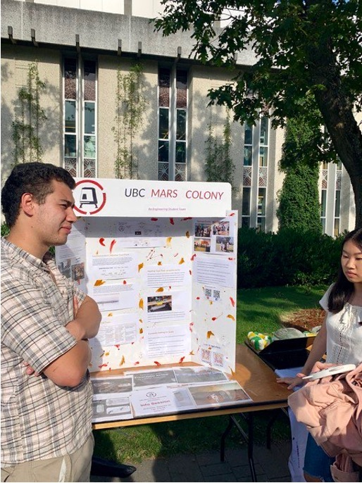
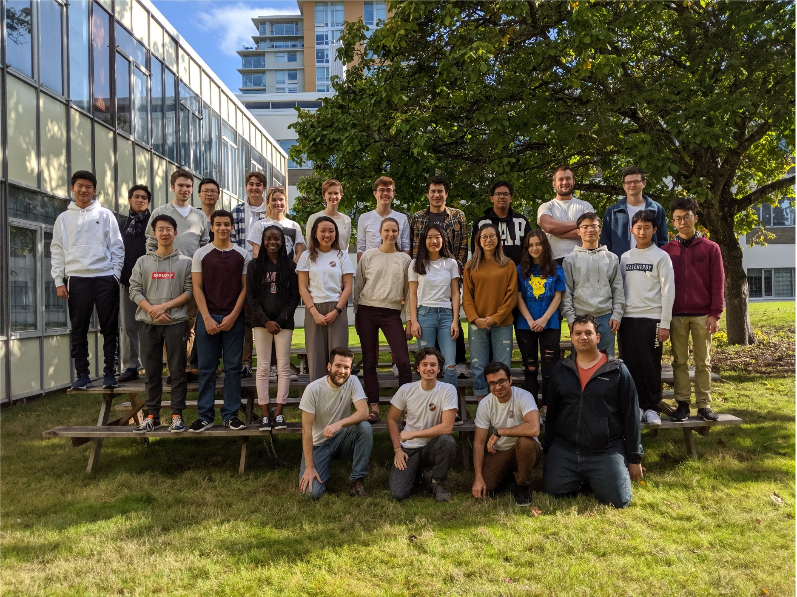
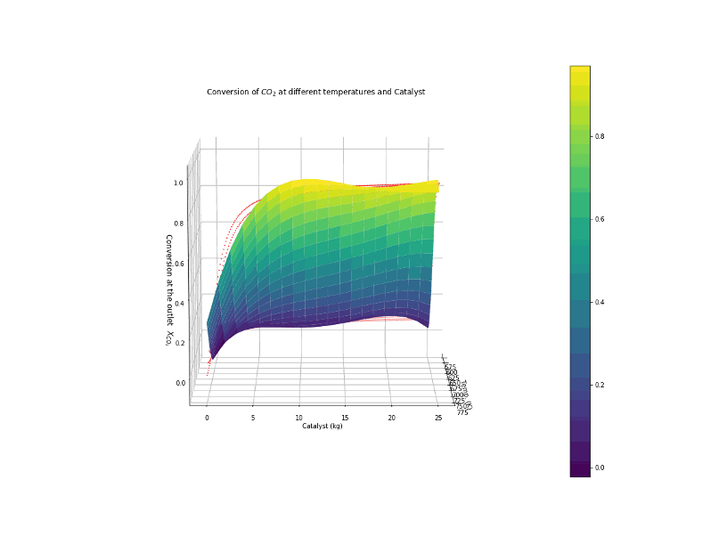

-
Sabatier Heating Tape Experiment
August, 2019 -

Imagine Day
September, 2019This was the first official recruitment which happened for the Sabatier Fuel Plant Project. You may recognize our mech team assistant lead Alyona, meeting the mechanical team lead Dagan for the very first time.
Team Photo
September, 2019This team photo shows the initial team when the project started.
-
Preheater Test v1
October, 2019This image shows the first test of the first iteration of the preheater, a component that raises the gas travelling through it to at least 500°C. In the initial preheater design, the heating element was a flexible strip of heating tape, wrapped in Cerablanket insulation, and covered in aluminum foil. This first test run showed that we could easily reach the desired temperature, but the design itself was still lacking: the heating element disintegrated once we tried to take it apart, the insulation had sub-optimal performance, and the tube bent under its own weight once the temperature reached our target.
-
UBC Engineering Open House
November, 2019This image shows our booth at the engineering open house in 2019 November. We presented our project to high school students interested joining Applied Science UBC. Then new members Joya (Left) and Hang (Right), ended up becoming the co-captains in 2022.
Reactor Housing Frame
November, 2019This image shows the reactor housing frame being completed. This housing frame is strong enough to carry at least 100kg of weight. It is still used for the test reactor system.
-
Building The Reactor Through the Pandemic
Summer, 2019The pandemic was a huge hit for the team as we had limited access to the team space. Meeting in-person was difficult. Nevertheless, we continued with what we were able to do in the mechanical team leads garage.
-
Presenting our Project at Mars Society
October, 2020Our then Vice Captain Yash, had the opportunity to present at the Mars Society conference. The full presentation can be viewed through this link.
-
American Society of Civil Engineers Earth and Space Conference
April, 2021Our then Captain Andrew and other members of the team were thrilled to share our project at the ASCE Earth and Space conference. Our project paper can be accessed through this link.
-
H2, CO2, Ar, and CH4 arriving to LMRS 160
May, 2021This image shows the gas cylinders of the reactant chemicals beside the fume hood in LMRS 160. Getting these cylinders made us feel that we were getting really close to our goal of producing methane.
Sabatier Reactor Simulation v1
May, 2021The very first attempt to model our reactor through a series of differential equation. The catalyst simulated was Nickel on Alumina/Silica. Although pretty, the code had some significant errors which would haunt the members in the future.
Returning to the team Space
May, 2021After a year of not being accessible, we were able to finally partially return to our team space. Its easy to see the smile on Dagan (our mechanical team leads face) even under the mask.
-
Preheater testing
June, 2021 -
First MFC in-frame testing
August, 2021This image shows our very first in-frame mass flow controller tests. These mass flow controllers are able to accurately control the amount of reactant gases entering the test reactor.
-
Imagine Day
September, 2021This was the first in-person booth we could have since the pandemic started. We missed being able to interact with students interested in our project.
-
Safety Block
November, 2021At UBC Mars Colony one of our values is safety. This image shows the reactor core (empty) secured on a wooden block so it would not tip over while pouring in the catalyst.
-
Preheater Final Testing
December, 2021Sabatier Reactor Simulation v2
December, 2021This is the second version of the reactor simulation. The fuel plant design sub-team took an additional 2 weeks to fix the code during holiday season. Little did they know that they would need to trash this iteration and start all over in the future.
-
Dry Run Test
February, 2022 -
Team Photo
March, 2022This was the first team photo taken since 2019 September. As the years passed many of the member changed, but the spirt and motivation had only become greater.
-
Condenser Building
April, 2022This was the first team photo taken since 2019 September. As the years passed many of the member changed, but the spirt and motivation had only become greater.
-
FMEA Team Meeting
May, 2022With all components of the test reactor ready to preform the experiment. The team took a whole session to make sure there were no safety hazards that we overlooked.
-

Sabatier Reactor Simulation Final Version
June, 2022The trilogy comes to an end. With plans of using ruthenium instead of the nickel catalyst, the kinetics of the code needed to be altered. It was only then we found out that the math in the code was incorrect the whole time. The simulation was corrected and validated against multiple other research papers.
Loading the Nickel Catalyst
June, 2022The day before the first ever experiment, Joya(left) the Captain and Dagan (right) the Vice Captain loaded the Nickel on Alumina/silica catalyst to the reactor core. This black powder was carcinogenic and required to be done using coveralls and under the fume hood. For future experiments ruthenium pellets were loaded for safety.

-
1st Methane Production Experiment
June, 2022With the catalyst now loaded and safety measures in place the only thing that needed to be done was the actual experiment. These images show the day of the experiment. All members were extremely nervous.
First drop of water, evidence of methane
June, 2022Although just a few drops of water this suggested that there was indeed methane being produced in the reactor. This was the moment we knew we made methane.
-
Maintaining the system
July, 2022With the team conducting experiments some alterations were made on the system to improve the performance of the test reactor.
-
CH4 Production
Present dayDr. Jing He at Clean Energy Research Center was kind enough to analyze our gas sample using gas chromatography. With actual direct readings of methane, we were able to confirm that our reactor was producing methane.